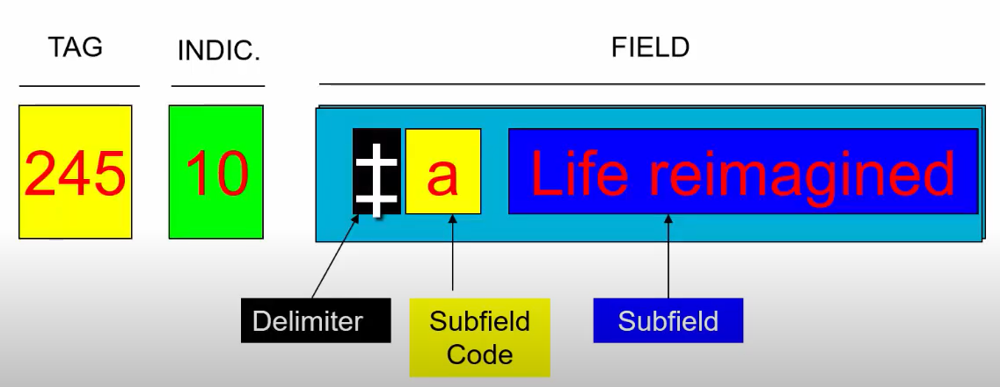

Paper-M-108
04th June 2023
IFLA held an International Conference on Cataloguing Principles (ICCP) at Paris in 1961 with a purpose to achieve international standardization in cataloguing
Standardization of International Standard Bibliographic Description (ISBD) made it economic & technological necessity for the creation, conversion, and use of machine-readable records
These rules are standards to promote universal bibliographic control
Consistency while sharing bibliographic information is the main goal of ISBD
| Year | Event |
|---|---|
| 1971 | ISBD for Monographic Publications (ISBD (M)) was published & was revised in 1974 as “First Standard Edition” and was again revised in 1987 |
| 1974 | ISBD (S) for serials was published & revised in 1988 |
| 1977 | ISBD (CM) for cartographic materials & ISBD (NBM) for non-book materials were appeared and revised in 1987 |
| 1977 | ISBD (G) was published. It includes information about general. The basic need of ISBD (G) was to ensure the harmony among other ISBDs and was revised in 1992 |
| 1980 | International bibliographic book description for Antiquarian & Printed music (ISBD (A)) & ISBD (PM) were published & revised in 1991 |
| 1988 | Description of component parts & a guideline for application of article level was published |
| 1989 | Conference carrying agenda on Section of Cataloging adopting a schedule with its procedures for the development & distribution of documents was held |
| 1990 | International Standard Bibliographic Description for Computer Files ISBD (CF) was published |
| 2002 | Updated procedures on electronic environment opportunities |
Creating a draft text
Worldwide Review
Final Revision
Balloting
Publication
It makes it possible to interchange records from different sources
It supports to overcome the language barriers and help to interpret records from one language to other
It facilitates the conversion of bibliographic records to electronic form
It defines the selection and order of data elements
It prescribes punctuation marks to be used within a bibliography
It establishes compatibility among cataloging for exchange of bibligraphic records for information centers
MARC stands for MAchine Readable Catalogue
Data indexing system which was developed by LoC in 1965
Allows computers to “understand” cataloging inputs
MARC code does not provide an instruction on description of library materials, but is a standard format for bibliographic info. into a computerized record
The information from a catalogue card cannot simply be typed into a computer to become part of an automated catalogue

MARC21 have following fields:
Number & Code Fields (01x-04x): contain control & linking no., standard no. and codes that relate to the biblio. item described in record
Classification & Call No. Fields (05x-08x): contain classification & call no. related to item described in biblio. record
Main Entry Fields (1xx): store a name or uniform title heading used as a main entry in biblio. record
EG. Work of Sir Winston Churchill will be entered as
100 1#$aChurchill, Winston, $cSir, $d1874-1965
Where,
Indicators: 0 - forename, 1- surname, 3 - family name
‘#’ - undefined character
Title & Title-Related Fields (20X-24X): store title of the item described in biblio. record & variant titles info.
EG. Book title: Information sources and searching on the world wide web
222 #0$a Information sources and searching on the world wide web
Where,
0: no non-filling character
$a: key title of concerned book
Edition & Imprint Fields (250-270): store info. on edition, imprint, address, and other publication source info. and data related to specific forms of material that apply to
item in question
EG. 250 ## $a2nd ed.
Physical Description Fields (3XX): store info. on physical charac., publication freq., price & physical arrangement of item
EG. 300 ## $ a149p. : $ bsd., col. ;$c23cm
$a: extent such as pages, volume
$b: other physical details like color or playing sped
$c: dimensions
Series Statement Fields (4XX): 440 & 490 contains series statements
EG. 440 #0 $ a Library & Information Science series $ n No. 5
EG. 500 ## $ a Based on an Indian folk tale
EG. 650 #0 $ a Architecture, Modern $ y 20th century
Added Entry Fields (70X-75X): provide access to biblio. record that is not provided through main entry (1XX), subject access (6XX), series statement (4XX), series added entry (8XX), title (20X-24X)
Linking Entry Fields (76X-78X): contains info. that links related biblio. items
Series Added Entry Fields (80X-830): contain name/title used in series added entry when series statement is contained in field 490 (series statement) or field 500 (general note) and a series added entry is required for biblio. record
EG. 856 40 $ u http://www.ref.oclc.org $ z Address for accessing journals in OCLC - 4: item accessed from HTTP - 0: electronic location - 856: same resources described by record as a whole - $u: URL - $z: note